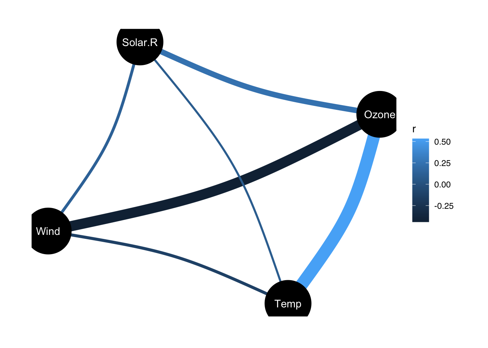

8 Bases para la regresión

Con la capa stat_smooth se puede trazar una curva de mejor ajuste para los datos
## `geom_smooth()` using method = 'loess' and formula = 'y ~ x'
Esta opción de smooth es una ayuda al ojo para encontrar patrones en los datos.
Se puede usar el método lm para comparar entre el partrón anterior y como se vería una ajuste lineal:
## `geom_smooth()` using method = 'loess' and formula = 'y ~ x'
## `geom_smooth()` using formula = 'y ~ x'
Similarmente, comparemos las variables Solar.R y Wind:
 Otra forma de ver sl gráfico:
Otra forma de ver sl gráfico:
ggplot(aire, aes(Solar.R, Wind)) +
geom_point(aes(color = Mes)) +
geom_smooth() +
geom_smooth(method = "lm")
Recordemos la correlación entre estas dos variables:
## Parameter1 | Parameter2 | r | 95% CI | t(109) | p
## ----------------------------------------------------------------
## Solar.R | Wind | -0.13 | [-0.31, 0.06] | -1.34 | 0.183
##
## Observations: 111Note que el IC contempla al valor cero, por lo que podría no haber correlación lineal.